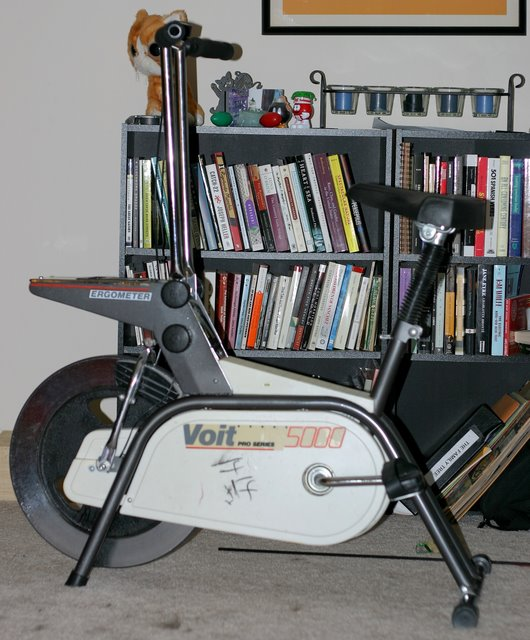
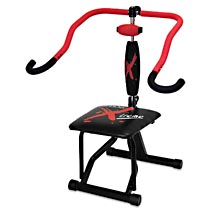

The Thrift Store is the Best Place to Get Exercise Equipment
For the past month I have been tracking my weight with help from SkinnyR. Ever since my 22nd birthday I have been unhappy with how round my tummy has been and immediately set out to get my weight under control. I realize that I am now at a point in my life where I simply can’t eat anything I want and my lack of exercise isn’t helping my situation. I have been playing Wii Sports a little bit which has gotten my butt off the couch but I needed something else to help me get a good cardio workout in.
That is why I picked up this lovely beast…

The Voit Pro Series 5000! Now I can keep active while watching some TV. I hope to do 15-25 minutes a night and the best part is this exercise bike only cost me $7.42!
Thrift stores can be the source of some good deals and because today was Memorial Day, Value Village marked everything 50% off. The bike was originally $14.14, a modest deal if you ask me. But at the counter to my surprise the bike came out to $7.42 after tax. Now I won’t feel that bad if I decide an exercise bike isn’t right for me or if this exercise bike is really doing the trick I might step up and put down the money for a good quality bike. I’m hoping for the latter but we will just wait and see what happens.
How did I think to go to the thrift store? Simple. Six months ago I was trying to get rid of an old strength training machine and thought it would be good to give away to Good Will. I drove up to the donation lot and they refused to take it because they already had too much exercise equipment. Makes sense to me since a lot of people buy a crap-load of new fangled devices they see on TV only to rapidly lose interest after starting.
P .S. They also had an Ab Doer Extreme (pictured below) that looked brand new. I didn’t see the price but I guarantee you it was less than $80 that it is going for online. You just never know what you might find at a second hand shop.


ZOMG, you’re finally blogging!
I CAN’T BELIEVE IT!
Reply
Damn, I just threw out an Ab Lounge that Ian bought and literally never used (not even once!) in two years. I’d have been happy to give it to someone, but I was too lazy to drive it to Good Will. The great thing about Baltimore is that you can just leave something out by the garbage and invariably, some random individual will pick it up. I wonder what sort of person would pick up an Ab Lounge from a pile of garbage? A very thrifty health enthusiast?
Reply
I just found this post after searching for info on a stationary bike I purchased at a Salvation Army yesterday . My particular model isn’t in any of the hundreds of photos posted , naturally , but that’s ok . One part , a strap , is torn on mine but I think I can improvise another if need be . I can still pedal it and that’s the important part , and it doesn’t hurt my knees , which are screwed up. So congratulations on the $7 price – mine was $20 but still a good deal because it’s small and quiet .
Reply